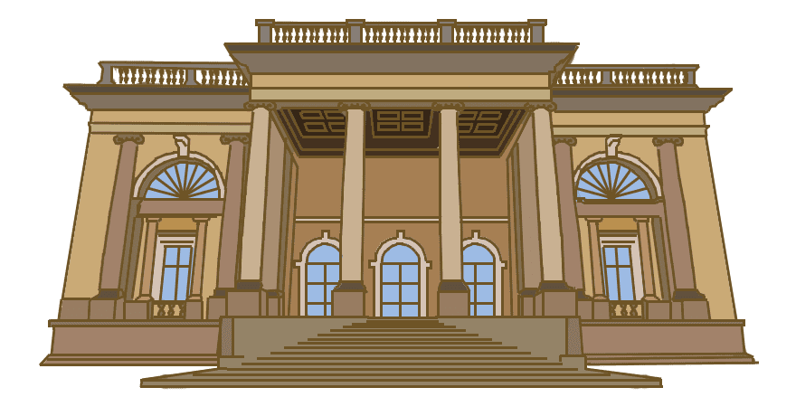
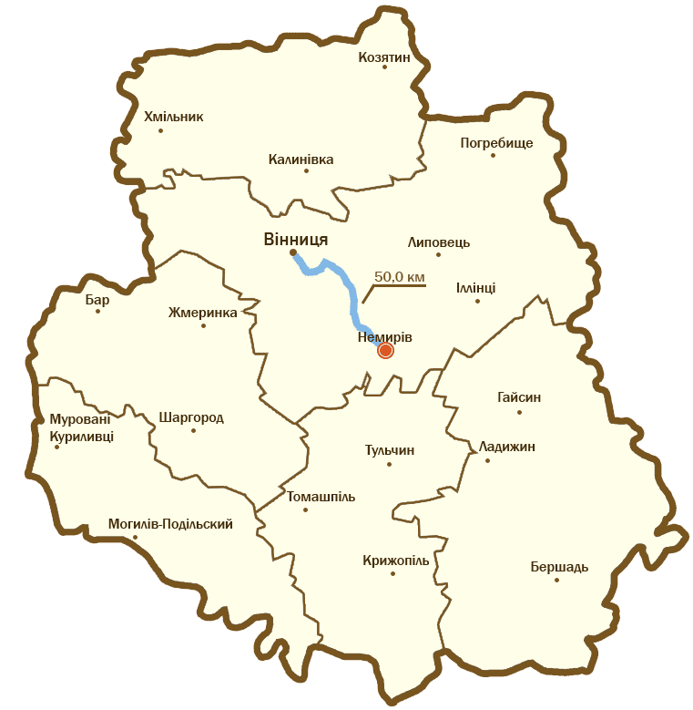

Загальні відомості
Палац був закладений в 1885 році княгинею Марією Щербатової. Будівництво було довірено чеському архітекторові з Праги Іржі Стібралу. Будівля зведена у стилі неокласицизм і окрасою невеличкого містечка на Вінничині - Немирова.
Історія
З княгинею Марією Щербатовою (1857–1920) — дочкою власника Немирівських земель, графа Григорія Строганова (1829—1910) — пов'язана найкрасивіша архітектурна пам'ятка Немирова. Авторство палацу (досі носить назву «Палац княгині Щербатової») належить відомому чеському архітектору Іржи Стібралу.
В 1894–1917 внучка Болеслава Потоцького Марія Щербатова перебудувала старий палац, збільшила парк, закладений за часів колишнього власника — Вінцентія Потоцького, який за його часів мав площу 85 гектарів.
В Немирівському палаці знаходилися багато речей з Тульчинського палацу, які перевіз сюди Болеслав Потоцький. В палаці знаходилися численні родині портрети, серед яких були портрет Анни Могили — дружини Станіслава Ревери Потоцького.
В 1880 році старий палац Потоцьких був розібраний і на його місці через п'ять років за проектом Е.Крамаржа почав зводитись новий. За легендою, ідеєю для будівлі цього палацу слугував візит до Англії, де княгині Щербатової сподобався один з англійських заміських палаців. Немирівський палац будувався дуже довго — з 1894 по 1917. З приводу авторства проекту палацу єдиної думки немає — вказуються або пара архітекторів Г.Гринера і Е.Крамаржа, або чеський архітектор Іржи Стибрал (його підпис мають креслення палацу). Швидше за все архітектори просто змінювались в зв'язку з довгим періодом будівництва палацу. Деякі речі зі старого батькового палацу були неренесені у новий — наприклад великий камін з білого мармуру з каріатидами, 2 мармурових медальйона.
Постановою від 18 грудня 2007 року «Про підсумки обласного конкурсу «Сім чудес Вінниччини» Немирівській парк і палац княгині Щербатової визнано «Перлиною Вінниччини».
Зараз на території музею знаходиться багатопрофільний санаторій “Авангард”.
Зовнішній вигляд
Палац Щербатової збудовано з вапняку у стилі неокласицизму двоповерховим прямокутним в плані. Збереглося первісне планування і більшість деталей декору. Окраса палацу – парковий фасад, прикрашений чотириколонним іонічним портиком з балюстрадою. Фасади опоясують широкі обгороджені парапетом видові тераси. Парадні сходи прикрашають скульптури левів.
Поруч з палацом є величезний дендропарк, який займає площу 85 гектарів. Парк трішки схожий на софіївський дендропарк в Умані. Тут налічується понад 150 видів дерев і чагарників.
Як дістатися
Адреса палацу: Вінницька область, м. Немирів, вул. Шевченка, 13.
На рисунку видно, що до палаца Щербатової можна проїхати на автомобілі або рейсовим автобусом Вінниця-Немирів.
Тривалість поїздки становить 50 км, що займає майже годину.
Цікаві факти
З будівництвом палацу пов’язані цікаві події. Його розпочинали і припиняли кілька раз, і все це через ворожку, яка напророкувала княгині смерть по закінченню будівництва замку.
Так і сталось, коли головні роботи були уже завершені і тривало внутрішнє оздоблення, княгиню Марію Щербатову разом з сином Дмитром і донькою Олександрою та невісткою Оленою у січні 1920 року розстріляв п'яний червоноармієць.